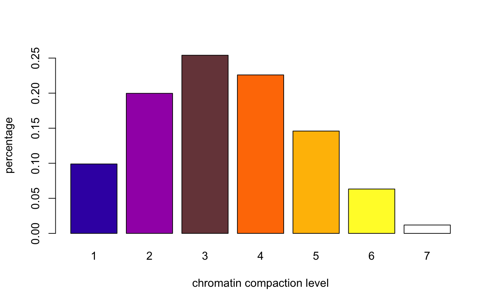
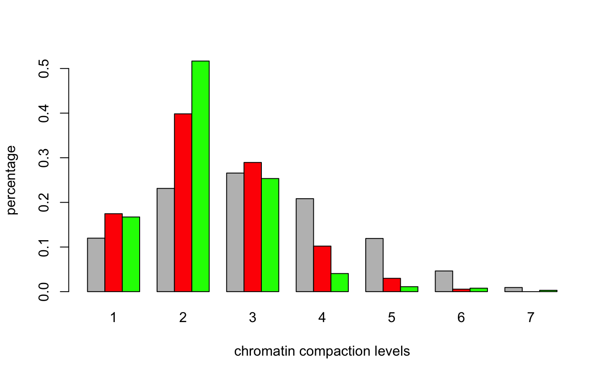
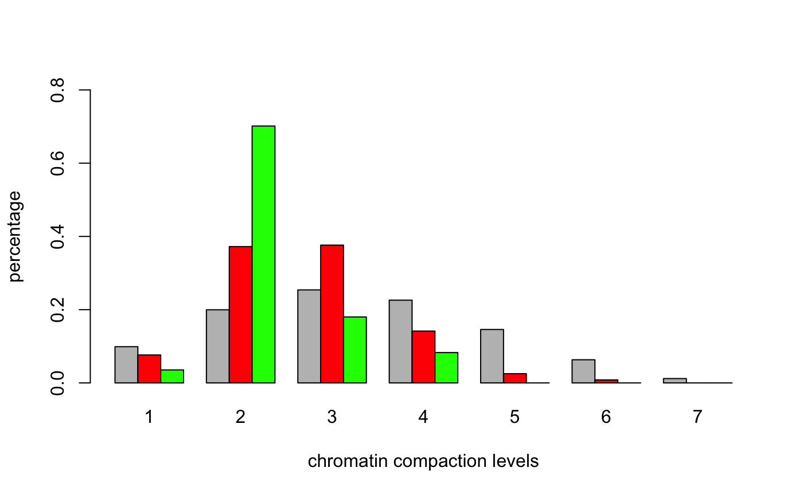

classes = classify(blue, mask, 7, beta=0.1, z=x/z)
## 0o0o.xXx.o0o.xXx.o0o.xXx.o0o.xXx.o0o.xXx.o0o.xXx.o0
tab<-table.n(classes, 7, percentage=TRUE)
barplot(tab, ylab="percentage", xlab="chromatin compaction level",col=heatmap7())
classes<-readClassTIF("classes.tif")
distances = nearestClassDistances(classes, voxelsize=c(x,y,z), classes=7, cores=16L)
save(distances,file="distances.Rdata")
plotNearestClassDistances(distances, method="min",ylim=c(0,.1),qu=.01)
tiff(filename="fig-vs-7.tiff",width=960)#remove
plotNearestClassDistances(distances, method="quantile",ylim=c(0,.22),qu=.01)
dev.off()#remove
tiff(filename="fig-vs-6.tiff",width=960)#remove
plotNearestClassDistances(distances, method="boxplot",ylim=c(0,1.5))
dev.off()#removered = img[,,1,]
green = img[,,2,]
cc1<-colors.in.classes(classes,red,green,mask,7,type="thresh",plot=TRUE,col1="red",col2="green",thresh1=0.05,thresh2=0.05,test="Wilcoxon",ylim=c(0,.5),xlab="chromatin compaction levels",ylab="percentage")## Wilcoxon rank-sum test DAPI vs. channel 1: p-value < 5e-09
## Wilcoxon rank-sum test DAPI vs. channel 2: p-value < 5e-09
## Wilcoxon rank-sum test channel 1 vs. channel 2: p-value = 8.63e-05
cc2<-colors.in.classes(classes,red,green,mask,7,type="intensity",plot=TRUE,col1="red",col2="green",thresh1=0.05,thresh2=0.05,test="Wilcoxon",ylim=c(0,.5),xlab="chromatin compaction levels",ylab="percentage")
## Wilcoxon rank-sum test DAPI vs. channel 1: p-value < 5e-09
## Wilcoxon rank-sum test DAPI vs. channel 2: p-value < 5e-09
## Wilcoxon rank-sum test channel 1 vs. channel 2: p-value = 0.02812029spots<-spots.combined(red=red,green=green,mask=mask,size=c(x,y,z),full.voxel=FALSE,thresh.offset=0.05)
## 0o0o.xXx.o0o.xXx.o0o.xXx.o0o.xXx.o0o.xXx.o0o.xXx.o0o.xXx.o0o.xXx.o0o.xXx.o0o.xXx.o0o.xXx.o0o.xXx.o0o.xXx.o0o.xXx.o0o.xXx.o0o.xXx.o0o.xXx.o0o.xXx.o0o.xXx.o0o.xXx.o0o.xXx.o0o.xXx.o0o.xXx.o0o.xXx.o0o.xXx.o0o.xXx.o0o.xXx.o0o.xXx.o0o.xXx.o0o.xXx.o0o.xXx.o0o.xXx.o0o.xXx.o0o.xXx.o0o.xXx.o0o.xXx.o0o.xXx.o0o.xXx.o0o.xXx.o0o.xXx.o0o.xXx.o0o.xXx.o0o.xXx.o0o.xXx.o0o.xXx.o0o.xXx.o0o.xXx.o0o.xXx.o0o.xXx.o0o.xXx.o0o.xXx.o0o.xXx.o0o.xXx.o0o.xXx.o0o.xXx.o0o.xXx.o0o.xXx.o0o.xXx.o0o.xXx.o0o.xXx.o0o.xXx.o0o.xXx.o0o.xXx.o0o.xXx.o0o.xXx.0o0o.xXx.o0o.xXx.o0o.xXx.o0o.xXx.o0o.xXx.o0o.xXx.o0o.xXx.o0o.xXx.o0o.xXx.o0o.xXx.o0o.xXx.o0o.xXx.o0o.xXx.o0o.xXx.o0o.xXx.o0o.xXx.occ<-colors.in.classes(classes,spots$red,spots$green,mask,7,type="i",plot=TRUE,col1="red",col2="green",test="Wilcoxon",ylim=c(0,.8),xlab="chromatin compaction levels",ylab="percentage")
## Wilcoxon rank-sum test DAPI vs. channel 1: p-value < 5e-09
## Wilcoxon rank-sum test DAPI vs. channel 2: p-value < 5e-09
## Wilcoxon rank-sum test channel 1 vs. channel 2: p-value = 0.00063115